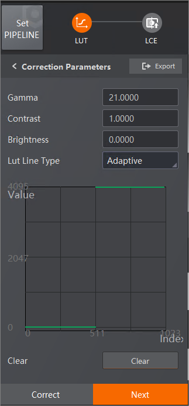

You can use Look-Up Table (LUT) to map the input gray scale values to corresponding output values based on a predefined gray scale mapping.
Set the Gamma value to achieve nonlinear color mapping. The value ranges from 0 to 100.
It ranges from -1 to 1. 0 indicates that the contrast does not change. The value less than 0 indicates that the contrast is lowering. The value greater than 0 indicates that the contrast is increasing.
It ranges from -1 to 1. 0 indicates that the brightness does not change. The value less than 0 indicates that the reduced brightness. The value greater than 0 indicates that the increased brightness.

Figure 1 Correction Parameters